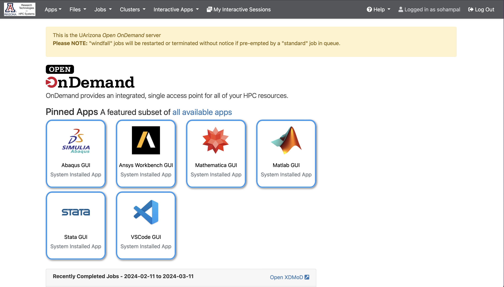
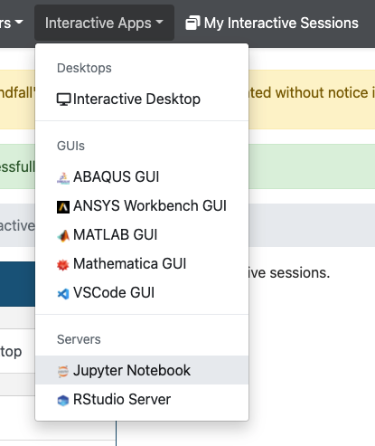
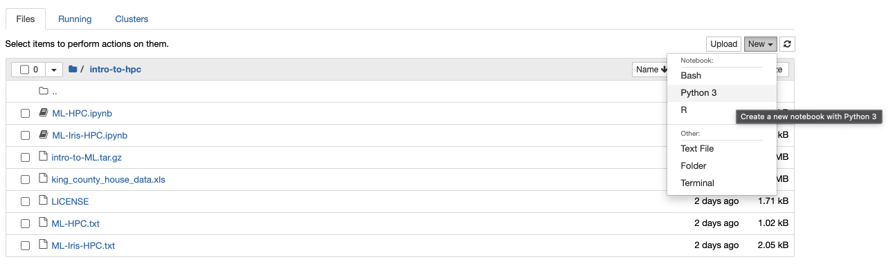

Intro to Machine Learning with Python on HPC
We will discuss a few hands-on examples of machine learning with Python. You can run these in a Jupyter notebook, or using a batch script (see Intro to HPC). Here we emphasize on using Jupyter notebooks. We recommend that you try these hands-on examples.
Why use Python for machine learning?
- Python is probably the most popular language for machine learning
- Python has a large ecosystem of packages for everything machine learning
- All popular machine learning platforms provide Python APIs
- All HPC consultants are very familiar with Python
Things to look out for
The popularity of Python also means that there are a lot of moving pieces. Sometimes, that can complicate your workflow. For machine learning with Python on HPC, keep the following in mind:
- Don't mix Python versions
- Using GPUs might need some extra configuration
- Not all Python package managers play well with HPC environments
Setting up Python for machine learning on HPC
Use virtual environments to install Python packages. See Python to learn how to create virtual environments with built-in Python tools. See Anaconda to learn how to create virtual environments with Conda (or its variants).
For the hands-on examples we will need the following packages (with GPU support):
torch- base PyTorch, think of this as an accelerated version of NumPytorchvision- adds support for machine learning with images to PyTorchfastai- layer on top of PyTorch that makes training easier
We will install these in a Python (version 3.8) virtual environment, and then create a Jupyter kernel so that we can access them from a Jupyter notebook. Installing fastai will install various other packages, like pandas and matplotlib, which we will also use. But we do not need to install them separately.
To create a Python virtual environment you need to be in an interactive session. Once in an interactive session run the following commands (1)
-
Choose suitable values for
<path-to-venv>: location where you want to install your Python virtual environment<kernel-name>: name of the Jupyter kernel, e.g.ml-workshop<optional-display-name>: optional prettier name for the Jupyter kernel shown in the Jupyter dashboard, e.g.Python (ML Workshop)
module load python/3.8
module load cuda11 cuda11-dnn cuda11-sdk # (1)!
python3 -m venv --system-site-packages <path-to-venv>
source <path-to-venv>/bin/activate
pip3 install torch torchvision torchaudio --index-url https://download.pytorch.org/whl/cu118
pip3 install fastai
pip3 install jupyter --force-reinstall
ipython kernel install --name <kernel-name> --user --display-name <optional-display-name>
- Load these modules for GPU support.
Jupyter Notebooks on UArizona HPC
UArizona HPC provides access to Jupyter notebooks via Open OnDemand (OOD). The following steps show how you can launch a Jupyter notebook from UArizona HPC's OOD portal:
- Navigate to https://ood.hpc.arizona.edu/. After login, you will see the OOD dashboard. 
- Select Interactive Apps, and then from the drop-down menu select Jupyter Notebook. 
- Fill in the details in the form that opens up (1), and select Launch.
- After the session becomes available, select Connect to Jupyter (2).
- Once you are in the Jupyter dashboard, create a notebook with the kernel you had installed. 
- Use your PI's group's name for the PI Group field. You can find out your PI's group's name by running
vain a terminal session. - After you select Launch in the previous step, OOD will take you to a page with a tile that shows your pending job. When it's first submitted, its status will show as Queued. Once it starts, it's status will change to Running and you'll see the Connect to Jupyter link.
Examples
Classification
In this example we will identify fungi species by their images. We will use a subset of the Danish Fungi 2020 dataset.
Accessing the data
The local dataset is at /contrib/datasets/workshops/DF20M-4.tar.gz. You can access from an interactive session. It consists of the four species with the most images in the DF20-Mini dataset. Copy it to your working directory (1), and untar it.
- under your home directory, or your PI's
/groupsor/xdiskshare
From an interactive session, run the following:
cd <working-dir>
cp /contrib/datasets/workshops/DF20M-4.tar.gz ./
tar xvf DF20M-4.tar.gz
Visualize the data
A sample of the local dataset will look different from the image above because it only contains a subset of the species. Visualizing the data will help us to decide which model to use, and how to train it.
from pathlib import path
from itertools import islice
def _ls(p, n=None): return list(islice(p.iterdir(), n)) # (1)!
p = Path("/xdisk/sohampal/sohampal/fungi/DF20M-4/") # (2)!
_ls(p)
- Helper function to list the contents of a directory. Why do we need
n? - Replace this with the path to where you downloaded the data.
[PosixPath('/xdisk/sohampal/sohampal/fungi/DF20M-4/train'),
PosixPath('/xdisk/sohampal/sohampal/fungi/DF20M-4/DF20M-4.tar'),
PosixPath('/xdisk/sohampal/sohampal/fungi/DF20M-4/test')]
There are two directories in the dataset, train and test:
traincontains images for training your modeltestcontains images for testing how well your model has learned
We can use _ls() to probe the contents of train, test, and their subdirectories.
_ls(p / "train")
[PosixPath('/xdisk/sohampal/sohampal/fungi/DF20M-4/train/Mycena galericulata'),
PosixPath('/xdisk/sohampal/sohampal/fungi/DF20M-4/train/Boletus edulis'),
PosixPath('/xdisk/sohampal/sohampal/fungi/DF20M-4/train/Amanita muscaria'),
PosixPath('/xdisk/sohampal/sohampal/fungi/DF20M-4/train/Clitocybe nebularis')]
_ls(p / "test")
[PosixPath('/xdisk/sohampal/sohampal/fungi/DF20M-4/test/Mycena galericulata'),
PosixPath('/xdisk/sohampal/sohampal/fungi/DF20M-4/test/Boletus edulis'),
PosixPath('/xdisk/sohampal/sohampal/fungi/DF20M-4/test/Amanita muscaria'),
PosixPath('/xdisk/sohampal/sohampal/fungi/DF20M-4/test/Clitocybe nebularis')]
_ls(p / "test" / "Mycena galericulata", 4) # (1)!
- Change the number to something else, and see what you get.
[PosixPath('/xdisk/sohampal/sohampal/fungi/DF20M-4/test/Mycena galericulata/2238582384-112591.JPG'),
PosixPath('/xdisk/sohampal/sohampal/fungi/DF20M-4/test/Mycena galericulata/2427873332-344961.JPG'),
PosixPath('/xdisk/sohampal/sohampal/fungi/DF20M-4/test/Mycena galericulata/2238559251-255760.JPG'),
PosixPath('/xdisk/sohampal/sohampal/fungi/DF20M-4/test/Mycena galericulata/2238471930-167014.JPG')]
The subdirectories of train and test tell us the name of the species. For example, all the training images corresponding to Boletus edulis are grouped under the subdirectory Boletus edulis.
{d.name: len(_ls(d)) for d in _ls(p / "train")}
{'Mycena galericulata': 1099,
'Boletus edulis': 811,
'Amanita muscaria': 863,
'Clitocybe nebularis': 1003}
The dataset is fairly balanced:
- Mycena galericulata and Clitocybe nebularis have similar number of training images
- Boletus edulis and Amanita muscaria have similar number of training images (around 80% of the other two)
It is usually much easier to train models with balanced datasets. For unbalanced datasets you might have to adopt smarter training processes to counter the bias in the datasets.
from PIL import Image
import matplotlib.pyplot as plt
%matplotlib inline
def show_images(p, ncols=8):
fig, axes = plt.subplots(1, ncols, figsize=(20, 2))
imgs = p.iterdir()
for i, ax in enumerate(axes):
img = next(imgs)
ax.imshow(Image.open(img))
ax.axes.get_xaxis().set_ticks([])
ax.axes.get_yaxis().set_ticks([])
fig.suptitle(p.name)
for d in _ls((p / "train")): show_images(d)
The images are of different shapes, this will be important when you train a model.
Simpler problem: binary classification
In the image samples above, we see that Boletus edulis and Amanita muscaria look drastically different from each other (they also have similar number of images). As a simpler problem, we will train a model to classify these two fungi species.
We will create a subdirectory called binary and copy the train and test images for the two species to it. This is not strictly necessary, but it will be easier to use the fastai dataloaders in this way.
You can copy the images using either shell tools from a terminal, or by running the following Python code from Jupyter.
import shutil
def copy_images(partition):
for fungi in ("Boletus edulis", "Amanita muscaria"):
(p / "binary" / partition / fungi).mkdir(parents=True, exist_ok=True)
for img in (p / partition / fungi).iterdir():
shutil.copy2(img, p / "binary" / partition / fungi)
copy_images("train")
copy_images("test")
Check that all the data has been copied correctly.
{d.name: len(_ls(d)) for d in _ls(p / "binary" / "train")}
{'Boletus edulis': 811, 'Amanita muscaria': 863}
{d.name: len(_ls(d)) for d in _ls(p / "binary" / "test")}
{'Boletus edulis': 90, 'Amanita muscaria': 96}
fastai package provides a DataBlock class to easily load the data to the model.
from fastai.data.all import *
from fastai.vision.all import *
dblock = DataBlock(blocks = (ImageBlock, CategoryBlock),
get_items = get_image_files,
get_y = parent_label,
splitter = RandomSplitter(),
item_tfms = Resize(224))
It is useful to understand the different arguments used when instantiating the DataBlock class:
blocks = (ImageBlock, CategoryBlock): Every instance of data consists of an image and a corresponding category (species name)get_items = get_image_files: Uses theget_image_filesfunction fromfastaito load the image filesget_y = parent_label: Uses theparent_labelfunction fromfastaito get the corresponding categories (in this case the name of the parent directory)splitter = RandomSplitter(): Randomly splits the data in to a train set and a validation setitem_tfms = Resize(224): Resizes all images to a size of 224 pixels x 224 pixels
dblock does not actually know where the images are. We can create a Datasets object from dblock which knows where the images are. Think of it as applying dblock to each of the images under binary/train.
dsets = dblock.datasets(p / "binary" / "train")
By default, RandomSplitter does a 80:20 split, i.e. 80% of the data under is used for training, and 20% for validation.
len(dsets.train), len(dsets.valid)
(1340, 334)
After training the model, we can test it with the images under binary/test. The model has never seen the images under binary/test during the training process, and thus this is a good way to test the generalization of the model. Sometimes, when we don't have a lot of data, we only split the data into a train set and a validation set.
It is useful to see how Datasets internally represents the data.
dsets.train[0], dsets.valid[0]
((PILImage mode=RGB size=1126x1000, TensorCategory(0)),
(PILImage mode=RGB size=3024x4032, TensorCategory(1)))
It records the type of input, colored images, along with their original sizes. But more importantly, it automatically transforms the categories Boletus edulis and Amanita muscaria to 1 and 0, respectively. (1)
- The
vocabattribute of theDatasetsobject will tell you which category is mapped to which number. Try runningdsets.vocab, the list index of a species is the number it has been mapped to.
We can use dsets to load the data to a model. However, it is best to load the images to a model in small batches (mini-batch). We will create a DataLoaders object which can load the images in small batches (default size is 64). (1)
- You do not need to create a
Datasetsobject to create aDataLoadersobject.dsetswas just for demonstrating some of the internals offastai. Think ofDataLoadersasDatasetsbut with a batch size.
dls = dblock.dataloaders(p / "binary" / "train")
dls.show_batch(max=9)
Now it is the time to train a model. You can build and train a deep learning model from scratch. An alternative is to fine-tune a pre-trained model. Fine-tuning is essentially taking advantage of past training, usually training done by the community, or some corporate. Instead of starting with a model with random parameters, you now start with a model that knows something. Generally fine-tuning a pre-trained model takes less time and data than training a model from scratch.
For an image classification you should a choose a model that has been trained on some large image dataset. One such model is Resnet-34 from Deep Residual Learning for Image Recognition, trained on the ImageNet dataset. See Which image models are best? for a catalog of such models. fastai provides a vision_learner object for easy training or fine-tuning image models.
learn = vision_learner(dls, resnet34, metrics=error_rate)
The lr_find method helps to choose a suitable learning rate.
learn.lr_find()
Any learning around, preferably larger, the valley (orange point) will be suitable for fine-tuning Resnet-34 to the binary dataset. Fine-tune the model for 3 epochs. (1)
- A good exercise to change the number of epochs, and see how that affects the model's learning.
learn.fine_tune(3, 2e-3)
epoch train_loss valid_loss error_rate time
0 0.605542 0.055386 0.017964 01:21
epoch train_loss valid_loss error_rate time
0 0.139088 0.088573 0.032934 01:21
1 0.088828 0.051099 0.020958 01:21
2 0.061853 0.035076 0.008982 01:22
We can use the show_results method of the vision_learner class to get a more visual sense of the quality of the learning. A better method is to use an Interpretation object. With an Interpretation object we can plot a confusion matrix, or print a overall performance report.
interp = ClassificationInterpretation.from_learner(learn)
interp.plot_top_losses(9, figsize=(15, 11))
interp.plot_confusion_matrix()
interp.print_classification_report()
precision recall f1-score support
Amanita muscaria 1.00 0.98 0.99 96
Boletus edulis 0.98 1.00 0.99 90
accuracy 0.99 186
macro avg 0.99 0.99 0.99 186
weighted avg 0.99 0.99 0.99 186
The confusion matrix and the classification report show how well the trained model performs on the validation set. Both the confusion matrix and the classification report give us the same information, we can explicitly calculate the metrics in the classification report from the confusion matrix. Choose whichever one that conveys the information better.
We can also do the same with the test set (binary/test), which the model didn't see during training.
test_files = get_image_files(p / "binary" / "test")
test_dl = dls.test_dl(test_files, with_labels=True) # (1)!
- This creates a test dataloader using the same transformations used to create the dataloader for the validation set.
preds = learn.get_preds(dl=test_dl)
for index, item in enumerate(preds[0]):
prediction = dls.categorize.decode(torch.argmax(item))
confidence = max(item)
percent = float(confidence)
print(f"Prediction: {prediction:18} - Confidence: {percent:.2%} - Image: {test_dl.items[index].name}")
...
Prediction: Boletus edulis - Confidence: 100.00% - Image: 2238481466-242195.JPG
Prediction: Boletus edulis - Confidence: 100.00% - Image: 2864902315-212162.JPG
Prediction: Boletus edulis - Confidence: 98.13% - Image: 2860312323-62558.JPG
Prediction: Boletus edulis - Confidence: 99.98% - Image: 2413150418-44022.JPG
Prediction: Boletus edulis - Confidence: 98.77% - Image: 2860298436-285200.JPG
Prediction: Boletus edulis - Confidence: 96.30% - Image: 2856920321-284750.JPG
Prediction: Amanita muscaria - Confidence: 100.00% - Image: 2238561790-182394.JPG
Prediction: Amanita muscaria - Confidence: 74.62% - Image: 2874318440-215186.JPG
Prediction: Amanita muscaria - Confidence: 99.99% - Image: 2898623358-68526.JPG
Prediction: Amanita muscaria - Confidence: 99.81% - Image: 2864909415-212510.JPG
Prediction: Amanita muscaria - Confidence: 100.00% - Image: 2430667070-196992.JPG
Prediction: Amanita muscaria - Confidence: 100.00% - Image: 2238525200-175134.JPG
...
interp = ClassificationInterpretation.from_learner(learn, dl=test_dl)
interp.plot_confusion_matrix()
Multi-class classification
The code for the multi-class classification can be exactly the same as for the binary classification. Just for experimentation and demonstration, we will try something little different. Instead of a train/validation/test split, try a train/validation split - all images under train used for training, and all images under test used for validation, with no separate test set. The GrandparentSplitter from fastai is useful for this arrangement.
dblock = DataBlock(blocks = (ImageBlock, CategoryBlock),
get_items = get_image_files,
get_y = parent_label,
splitter = GrandparentSplitter(train_name="train", valid_name="test"),
item_tfms = Resize(224))
dls = dblock.dataloaders(p)
dls.show_batch()
learn = vision_learner(dls, resnet34, metrics=error_rate)
learn.lr_find()
learn.fine_tune(5, 2e-3)
epoch train_loss valid_loss error_rate time
0 0.660746 0.330275 0.102310 04:38
epoch train_loss valid_loss error_rate time
0 0.239338 0.225458 0.077558 04:31
1 0.141983 0.287751 0.080858 04:33
2 0.072769 0.190867 0.049505 04:30
3 0.029050 0.197074 0.049505 04:28
4 0.015718 0.200661 0.049505 04:39
interp = ClassificationInterpretation.from_learner(learn)
interp.plot_confusion_matrix()
Clustering
In this example we will cluster penguins into groups based on their bill features. We will use the Palmer penguins dataset.

Artwork by @allison_horst
Accessing the data
There is a Python package palmerpenguins that provides the data, along with some other goodies. However for the purposes of this example you can simply download the penguins.csv from the Github repo of the package.
Visualizing the data
import pandas as pd
import matplotlib.pyplot as plt
from matplotlib import colormaps
penguins = pd.read_csv("penguins.csv") # (1)!
penguins.head()
- Replace this with the full path to the
penguins.csvfile if the file and the notebook are not in the same directory.
species island bill_length_mm bill_depth_mm flipper_length_mm body_mass_g sex year
0 Adelie Torgersen 39.1 18.7 181.0 3750.0 male 2007
1 Adelie Torgersen 39.5 17.4 186.0 3800.0 female 2007
2 Adelie Torgersen 40.3 18.0 195.0 3250.0 female 2007
3 Adelie Torgersen NaN NaN NaN NaN NaN 2007
4 Adelie Torgersen 36.7 19.3 193.0 3450.0 female 2007
The dataset list the species of each penguin, which island in Palmer archipelago and which year they were observed in, and some physical features. Complete data for all penguins are not available, missing values are indicated by NaN.
penguins["species"].unique()
array(['Adelie', 'Gentoo', 'Chinstrap'], dtype=object)
There are three unique species of penguins in the dataset. It might be tempting to think that there are three clusters in the dataset - one for each species. However, that need not be the case. Even if there are three clusters, they might not necessarily overlap with any species. Whether the clusters correspond to species will depend on the variance in intra-species differences and the variance in inter-species differences.
pd.plotting.scatter_matrix(penguins, columns=["bill_length_mm", "bill_depth_mm", "flipper_length_mm", "body_mass_g"], figsize=(8, 8))
The figure above shows that only when we plot bill_length_mm vs bill_depth_mm, or bill_length_mm vs flipper_length_mm we see more than two clusters. This does not mean that there are not more that two clusters. It just means that in two-dimensions these are the only two cases where we see hints of more two clusters.
Mean shift clustering
Clustering is an unsupervised machine learning process, we do not provide any labels when we train the model. This is unlike the previous case of image classification, where we provided the labels (the species that image belonged to). What this means is that a clustering model will not be able to tell if a particular cluster corresponds to a penguin species (or any other suitable label depending on the problem), but it will show the clusters that are there in the dataset.
In mean shift clustering, candidates for centroids are updated to be the mean of the points within a given region. Each observation belongs to the cluster with the nearest mean. See Mean shift: a robust approach toward feature space analysis for more information on mean shift clustering.
Here is a naive implementation of mean shift clustering. Mean shift clustering depends on a kernel function, which takes in one hyperparameter called bandwidth. In this implemetation, we use the Gaussian kernel:
For the Gaussian kernel, the bandwidth is the same as the standard deviation.
import torch
def gaussian(x, mu, sigma):
return torch.exp(-0.5 * ((x - mu) / sigma) ** 2) / (
sigma * torch.sqrt(torch.tensor(2 * torch.pi))
)
def meanshift(data, bw, bs=None, epochs=10):
X = data.clone()
n = len(data)
if bs is None or bs > n:
bs = n
for _ in range(epochs):
for i in range(0, n, bs):
dist = torch.cdist(X[i : min(i + bs, n)], X)
weights = gaussian(dist, 0, bw)
X[i : min(i + bs, n)] = (weights @ X) / weights.sum(1, keepdim=True)
return X
In this workshop we will look at a two-dimensional case, as it is easier to visualize. We will pick two physical features of the penguins, and see if we can identify the clusters in that two-dimensional data. (1)
- A good exercise will be to try a multidimensional case, by considering more than two physical features of the penguins.
data = penguins[["bill_length_mm", "bill_depth_mm"]]
data = data.dropna() # (1)
- We need to remove the missing values.
Since the mean shift implementation above is with PyTorch, we have to convert the data to PyTorch tensors. This also gives us the opportunity to use GPUs, if available.
data = torch.tensor(data.values)
if torch.cuda.is_available(): data = data.cuda()
centroids = meanshift(data, 1.5, 10).cpu() # (1)!
- Try a different value, than 1.5, for the bandwidth, and see how that affects the results.
fig, ax = plt.subplots()
ax.scatter(data = penguins, x = "bill_length_mm", y = "bill_depth_mm")
ax.set_xlabel("bill_length_mm")
ax.set_ylabel("bill_depth_mm")
ax.scatter(centroids[:, 0], centroids[:, 1], marker="x", color="red")

The algorithm gives the centroids for three clusters, but not necessarily in the positions that you would expect them. A good exercise will be to check the scikit-learn implementation of mean shift clustering, and see if the naive implementation above can be improved.